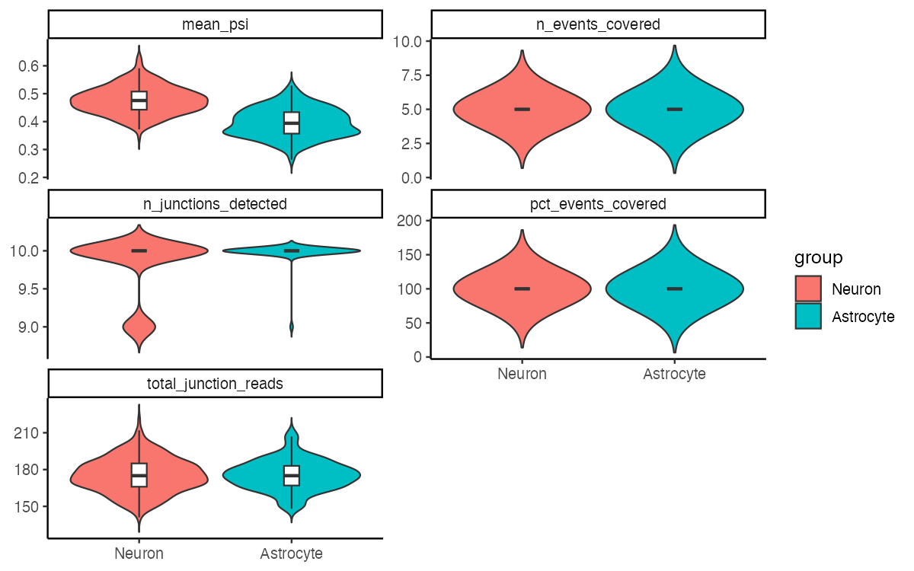
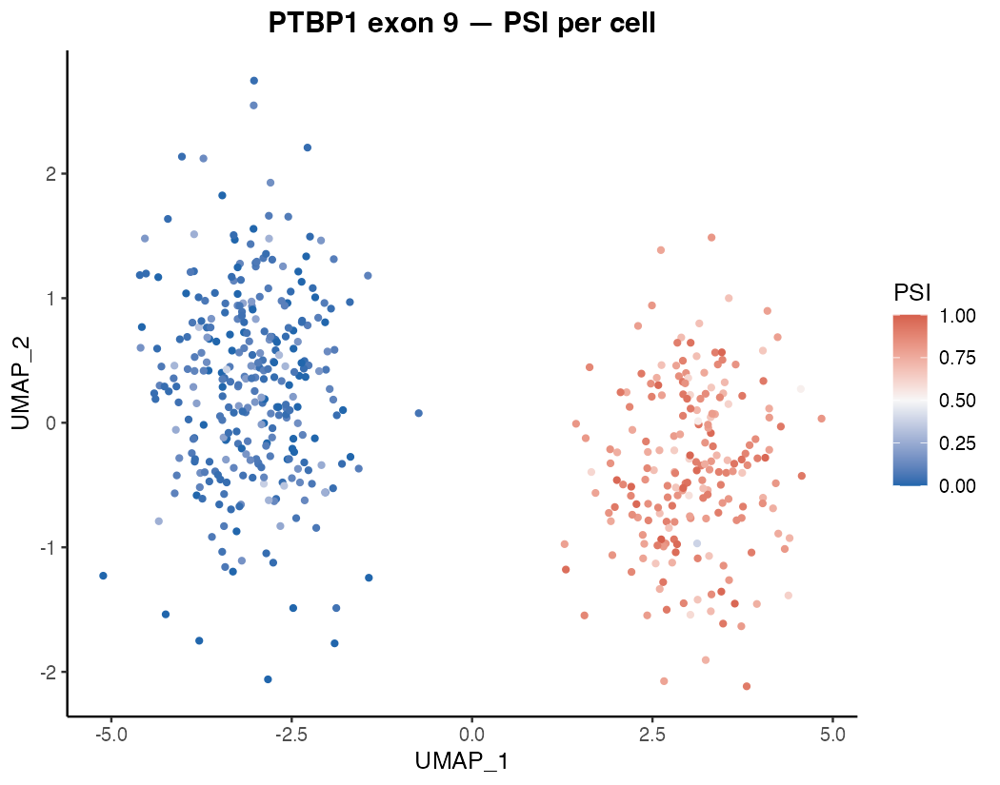
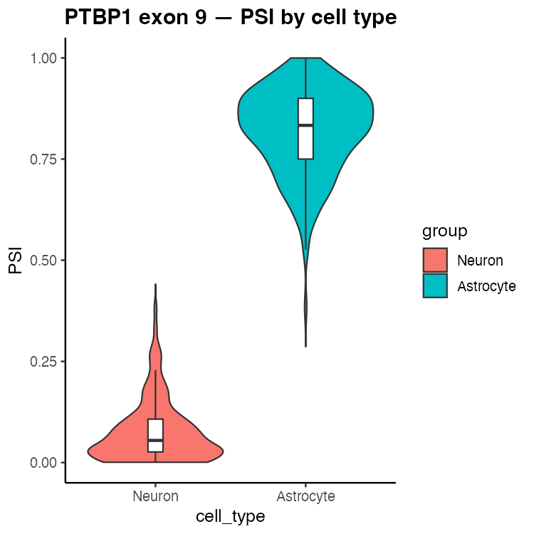
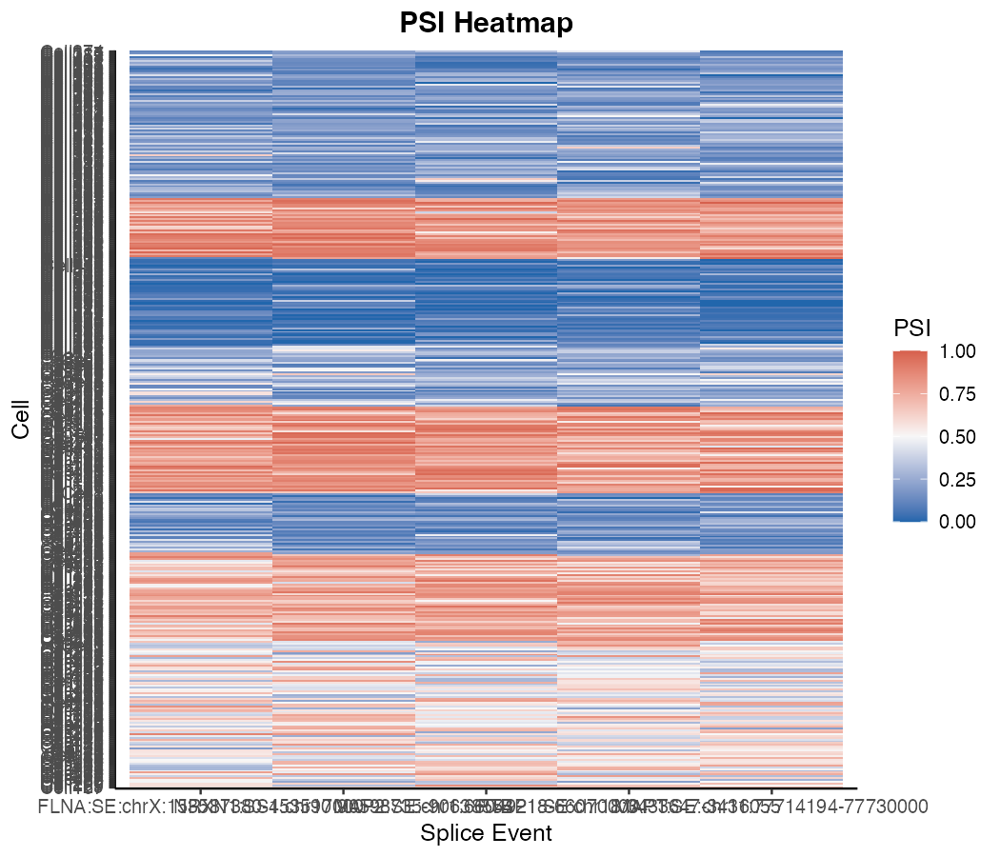

What does Matisse do?
Genes can be spliced in different ways: certain exons may be included in some transcripts but skipped in others. This is called alternative splicing, and it means one gene can produce multiple protein isoforms with different functions.
Matisse measures alternative splicing one cell at a time. For each cell in your dataset, it calculates a PSI value (Percent Spliced In) for each splicing event you care about:
- PSI = 1 — every transcript in that cell includes the exon
- PSI = 0 — every transcript skips the exon
- PSI = 0.5 — half include, half skip
By comparing PSI values across your cell types, clusters, or conditions, you can identify which populations splice genes differently — and by how much.
Matisse sits on top of your existing Seurat workflow. Your gene expression data, UMAP, and cluster labels stay intact; splicing information is simply added alongside them.
A worked example: the PTBP1 splicing switch in mouse cortex
One of the best-studied examples of cell-type-specific splicing is Ptbp1 exon 9. In non-neuronal cells (astrocytes, progenitors), this exon is included in most transcripts (high PSI). As cells differentiate into mature neurons, a neuron-specific splicing factor switches this off: exon 9 is skipped in almost all neuronal transcripts (low PSI). This switch has functional consequences for PTBP1 protein activity and downstream splicing regulation.
Here we analyse 500 single cells from mouse cortex — 300 neurons and 200 astrocytes — and use Matisse to detect this switch and survey splicing differences across five well-characterised alternative exons.
Note: The code below shows every step of the analysis. Because the data are not bundled with the package, chunks are set to
eval = FALSE. The figures shown were generated from a simulated dataset that closely mirrors the PSI distributions observed in published mouse cortex scRNA-seq studies.
Step 1 — Build the Matisse object
Starting materials:
- A Seurat object (
seu) already processed through clustering and UMAP - A junction count table (
jxn_counts) from STARsolo — one row per cell, one column per exon-exon junction, values = number of reads crossing each junction in that cell - A splice event table (
event_df) defining which junctions support inclusion versus skipping for each event of interest
library(Matisse)
obj <- CreateMatisseObject(
seurat = seu,
junction_counts = jxn_counts,
event_data = event_df
)Step 2 — Calculate PSI
For each cell and each splicing event, Matisse sums the reads from
inclusion-supporting junctions and exclusion-supporting junctions, then
computes the ratio. Cells with fewer than min_coverage
total reads for an event are left as missing — not enough data to call a
reliable splicing ratio.
obj <- CalculatePSI(obj, min_coverage = 5)Step 3 — Quality control
Before interpreting results, check that each cell has enough junction data to be reliable.
obj <- ComputeIsoformQC(obj)
PlotQCMetrics(obj, group_by = "cell_type")
Per-cell splicing QC metrics split by cell type. Both neurons and astrocytes show similar junction detection rates and event coverage, indicating balanced data quality across populations.
Both cell types show comparable data quality: nearly all cells detect all 10 junctions and achieve full event coverage. No filtering is needed here, but in a noisier real dataset you would remove low-quality cells at this stage:
# Remove cells with too few detected junctions or too little event coverage
obj <- FilterCells(
obj,
min_junctions = 5,
min_junction_reads = 20,
min_pct_covered = 10
)
# Remove events that are measurable in too few cells or show no variation
obj <- FilterEvents(
obj,
min_cells_covered = 20,
min_psi_variance = 0.01
)Step 4 — Visualise the PTBP1 splicing switch
Where does the switch happen on the UMAP?
Overlay the PTBP1 exon 9 PSI value onto the cell UMAP. Each dot is a cell, coloured by its PSI value: blue = exon skipped (low PSI), red = exon included (high PSI).
PlotPSIUMAP(
obj,
event_id = "PTBP1:SE:chr18:3433647-3436055",
title = "PTBP1 exon 9 — PSI per cell"
)
UMAP coloured by PTBP1 exon 9 PSI. Neurons (left cluster) are uniformly blue — exon 9 is almost always skipped. Astrocytes (right cluster) are uniformly red — exon 9 is almost always included. The splicing switch perfectly mirrors the cell-type boundary.
The two clusters are completely separated by splicing state alone — without using any gene expression information.
How large is the difference?
PlotPSIViolin(
obj,
event_id = "PTBP1:SE:chr18:3433647-3436055",
group_by = "cell_type",
title = "PTBP1 exon 9 — PSI by cell type"
)
Distribution of PTBP1 exon 9 PSI values in neurons versus astrocytes. Neurons cluster tightly near PSI = 0 (exon nearly always skipped); astrocytes cluster near PSI = 0.8–1.0 (exon nearly always included). This near-binary switch is characteristic of a regulated developmental splicing event.
Neurons show a tight distribution near PSI = 0 (median ~0.08); astrocytes show a tight distribution near PSI = 0.82. The difference is large, consistent, and cell-type-specific — exactly the signature of a developmentally regulated splicing switch.
Step 5 — Survey splicing across multiple events
Use the heatmap to get an overview of all five events at once, with cells ordered by cell type. Rows are cells, columns are splicing events.
PlotPSIHeatmap(obj, group_by = "cell_type", max_cells = 400)
PSI heatmap across five alternative exons. Cells are ordered by cell type (neurons top half, astrocytes bottom half); events are hierarchically clustered. PTBP1 and NRXN1/MAP2 show opposing directionality — events skipped in neurons are included in astrocytes and vice versa. FLNA exon 30 shows no difference, confirming the pattern is event-specific rather than a global shift.
The heatmap reveals the overall splicing landscape:
- PTBP1 exon 9: low PSI in neurons, high in astrocytes (exon skipped in neurons)
- NRXN1 SS4 and MAP2 exon 16: high PSI in neurons, low in astrocytes (neuron-enriched inclusion)
- FLNA exon 30: no difference between cell types — a useful negative control showing that not every event is regulated
- MAPT exon 10: mild difference, illustrating that splicing changes come in a spectrum of effect sizes
Accessing your data at any point
The Seurat object and all metadata remain fully accessible alongside the splicing information:
# Extract the Seurat object (for any standard Seurat workflow)
seu <- GetSeurat(obj)
# Access cell-level metadata with $
obj$cell_type
obj$seurat_clusters
# Retrieve the full PSI matrix as a plain table
psi_table <- GetPSI(obj)
# Subset to a specific cell type — both gene expression and PSI update together
neurons <- obj[obj$cell_type == "Neuron", ]Session info
sessionInfo()
#> R version 4.5.3 (2026-03-11)
#> Platform: x86_64-pc-linux-gnu
#> Running under: Ubuntu 24.04.4 LTS
#>
#> Matrix products: default
#> BLAS: /usr/lib/x86_64-linux-gnu/openblas-pthread/libblas.so.3
#> LAPACK: /usr/lib/x86_64-linux-gnu/openblas-pthread/libopenblasp-r0.3.26.so; LAPACK version 3.12.0
#>
#> locale:
#> [1] LC_CTYPE=C.UTF-8 LC_NUMERIC=C LC_TIME=C.UTF-8
#> [4] LC_COLLATE=C.UTF-8 LC_MONETARY=C.UTF-8 LC_MESSAGES=C.UTF-8
#> [7] LC_PAPER=C.UTF-8 LC_NAME=C LC_ADDRESS=C
#> [10] LC_TELEPHONE=C LC_MEASUREMENT=C.UTF-8 LC_IDENTIFICATION=C
#>
#> time zone: UTC
#> tzcode source: system (glibc)
#>
#> attached base packages:
#> [1] stats graphics grDevices utils datasets methods base
#>
#> loaded via a namespace (and not attached):
#> [1] digest_0.6.39 desc_1.4.3 R6_2.6.1 fastmap_1.2.0
#> [5] xfun_0.57 cachem_1.1.0 knitr_1.51 htmltools_0.5.9
#> [9] rmarkdown_2.31 lifecycle_1.0.5 cli_3.6.6 sass_0.4.10
#> [13] pkgdown_2.2.0 textshaping_1.0.5 jquerylib_0.1.4 systemfonts_1.3.2
#> [17] compiler_4.5.3 tools_4.5.3 ragg_1.5.2 bslib_0.10.0
#> [21] evaluate_1.0.5 yaml_2.3.12 otel_0.2.0 jsonlite_2.0.0
#> [25] rlang_1.2.0 fs_2.0.1 htmlwidgets_1.6.4